전기산업기사 (2012-08-26 기출문제)
1과목: 전기자기학
1. 대전 도체 내부의 전위에 대한 설명으로 옳은 것은?
- 내부에는 전기력선이 없으므로 전위는 무한대의 값을 갖는다.
- 내부의 전위와 표면전위는 같다. 즉 도체는 등전위이다.
- 내부의 전위는 항상 대지전위와 같다.
- 내부에는 전계가 없으므로 0전위이다.
(정답률: 63%)

2. 자화율 x와 비투자율 μs의 관계에서 상자성체로 판단 할 수 있는 것은?
- x ＞ 0, μs ＜ 1
- x ＜ 0, μs ＞ 1
- x ＞ 0, μs ＞ 1
- x ＜ 0, μs ＜ 1
(정답률: 73%)
3. 강자성체의 자속밀도 B의 크기와 자화의 세기 J의 크기 사이에는 어떤 관계가 있는가?
- J가 B보다 약간 크다.
- J는 B보다 대단히 크다.
- J는 B보다 약간 작다
- J는 B와 똑같다.
(정답률: 76%)
4. 다음 설명 중 옳은 것은?
- 완전 도체가 아닌 일정한 고유저항을 가진 대지상에 대지와 나란히 높이 h인 곳에 가선된 전류 I가 흐르는 원통상 도선의 영상전류는 방향이 반대인 -I이고, 땅속 h보다 얕은 곳에 대지면과 나란히 흐르는 영상전류이다.
- 접지 구도체의 외부에 있는 점전하에 기인된 접지 구도체상 유도전하의 영상전하는 2개 있다.
- 두 유전체가 무한 평면으로 경계면을 이루고 접해있을때, 한 유전체내에 있는 점전하 Q의 영상전하는, 경계면과 Q간 거리의 연장선상 반대편 등거리에 1개 있다.
- 절연 도체구의 외부에 점전하가 있을 때 절연 도체구에 유도된 전하에 관한 영상 전하는 2개 있다.
(정답률: 44%)
5. 두 개의 자하m1, m2 사이에 작용되는 쿨롱의 법칙으로서 자하간의 자기력에 대한 설명으로 옳지 않은 것은?
- 두 자하가 동일 극성이면 반발력이 작용한다.
- 두 자하가 서로 다른 극성이면 흡입력이 작용한다.
- 두 자하의 거리에 반비례한다.
- 두 자하의 곱에 비례한다.
(정답률: 71%)
6. 열전대는 무슨 효과를 이용한 것인가?
- 압전효과
- 제벡효과
- 홀 효과
- 가우스 효과
(정답률: 79%)
7. 자기 인덕턴스가 L1, L2이고, 상호인덕턴스가 M인 두 코일을 직렬로 연결하여 합성인덕턴스 L을 얻었을 때, 다음 중 항상 양의 값을 갖는 것만 골라 묶은 것은?
- L1, L2, M
- L1, L2, L
- M, L
- 항상 양의 값을 갖는 것은 없다.
(정답률: 66%)
8. 전압 V로 충전된 용량 C의 콘덴서에 용량 2C의 콘덴서를 병렬 연결한 후의 단자 전압[V]은?
- 3V
- 2V
- V/2
- V/3
(정답률: 68%)
9. 자기회로 단면적 4[cm2]의 철심에 6×10-4[Wb]의 자속을 통하게 하려면 2800[AT/m]의 자계가 필요하다. 철심의 비투자율 [H/m]은?
- 12
- 43
- 75
- 426
(정답률: 51%)
10. 두 자성체 경계면에서 정자계가 만족하는 것은?
- 자속밀도의 접선성분이 같다.
- 자속은 투자율이 작은 자성체에 모인다.
- 양측 경계면상의 두 점간의 자위차가 같다.
- 자계의 법선성분이 같다.
(정답률: 76%)
11. 평행판 공기콘덴서의 극판 사이에 비유전율 ℇs의 유전체를 채운 경우 동일 전위차에 대한 극판간의 전하량 Q[C]는?
- ℇs배로 증가
- 1/ℇs배로 감소
- πℇs 배로 증가
- 불변
(정답률: 78%)
12. 두 도체 A와 B에서 도체 A에는 +Q[C], 도체 B에는 -Q[C]의 전하를 줄 때 도체 A, B간의 전위차를 VAB라 하면 성립되는 식은? (단, 두 도체 사이의 정전용량은 C이다.)
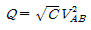
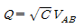
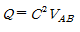
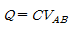
(정답률: 72%)
13. 그림과 같이 진공내의 A, B, C 각 점에 QA= 4×10-6[C], QB= 2×10-6[C], QC=5×10-6[C]의 점전하가 일직선상에 놓여 있을 때 B점에 작용하는 힘은 몇 [N]인가?
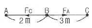
- 0.8 × 10-2
- 1.2 × 10-2
- 1.8 × 10-2
- 2.4 × 10-2
(정답률: 54%)
14. 반지름 a[m]되는 도선의 1[m]당 내부 자기 인덕턴스는 몇 [H/m]인가?
- μ/8π
- μ/4π
- μa/8π
- μa/4π
(정답률: 50%)
15. 유전율이 각각 ℇ1, ℇ2인 두 유전체가 접해있는 경우 전기력선의 방향을 그림과 같이 표시할 때 ℇ1＞ℇ2이면, θ1과 θ2의 관계는?
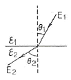
- θ1 = θ2
- θ1 ＜ θ2
- θ1 ＞ θ2
- 전기력선의 방향에 따라 θ1 ＜ θ2 혹은 θ1 ＞ θ2
(정답률: 78%)
16. 무한 평면도체에서 h[m]의 높이에 반지름 a[m](a《h)의 도선을 도체에 평행하게 가설하였을 때 도체에 대한 도선의 정전용량은 몇 [F/m]인가?
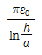
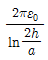
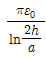
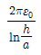
(정답률: 55%)
17. 유전율 ℇ1[F/m],ℇ2[F/m]인 두 종류의 유전체가 무한평면을 경계로 접해있다. 유전체에서 경계면으로부터 r[m] 만큼 떨어진 점 P에 점전하 Q[C]가 있을 경우, 점전하와 유전체 ℇ2 사이에 작용하는 힘[N]은?
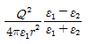
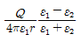
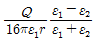
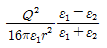
(정답률: 58%)
18. 다음 중 전자계에 대한 맥스웰의 기본 이론으로 옳지 않은 것은?
- 고립된 자극이 존재한다.
- 전하에서 전속선이 발산된다.
- 전도전류와 변위전류는 자계의 회전을 발생시킨다.
- 자속밀도의 시간적 변화에 따라 전계의 회전이 생긴다.
(정답률: 76%)
19. 도전성을 가진 매질내의 평면파에서 전송계수 r를 표현한 것으로 알맞은 것은?
- r=a+jβ
- r=a-jβ
- r=ja+β
- r=ja-β
(정답률: 74%)
20. 자기 인덕턴스 50[mH]의 회로에 흐르는 전류가 매초 100[A]의 비율로 감소할 때 자기 유도기전력은?
- 5×10-4[mV]
- 5[V]
- 40[V]
- 200[V]
(정답률: 71%)
2과목: 전력공학
21. 송전선용 표준철탑 설계의 경우 일반적으로 가장 큰 하중은?
- 빙설
- 애자, 전선의 중량
- 풍압
- 전선의 인장강도
(정답률: 73%)
22. 출력 20000[kW]의 화력발전소가 부하율 80%로 운전할 때 1일의 석탄 소비량은 약 몇 ton인가? (단, 보일러 효율 80%, 터빈의 열 사이클 효율 35%, 터빈효율 85%, 발전기 효율 76%, 석탄의 발열량은 5500[kcal/kg]이다.)
- 272
- 293
- 312
- 333
(정답률: 49%)
23. 변전소에서 사용되는 조상설비 중 전력 손실이 출력의 최대 0.6[%]이하이며 지상용으로 사용되는 조상설비는?
- 전력용 콘덴서
- 분로 리액터
- 동기 조상기
- 유도 전압 조정기
(정답률: 65%)
24. 3상 3선식 소호리액터 접지방식에서 1선의 대지 정전용량을 C[㎌], 상전압 E[kV], 주파수 f[Hz]라 하면, 소호 리액터의 용량은 몇 [kVA]인가?
- πfCE2×10-3
- 2πfCE2×10-3
- 3πfCE2×10-3
- 6πfCE2×10-3
(정답률: 57%)
25. 전력선 1선의 대지전압을 E, 통신선의 대지정전용량을 Cb, 전력선과 통신선 사이의 상호 정전용량을 Cab라고 하면, 통신선의 정전유도전압은?
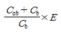
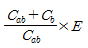
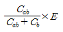
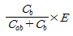
(정답률: 66%)
26. 코로나 방지에 가장 효과적인 방법은?
- 선간거리를 증가시킨다.
- 전선의 높이를 가급적 낮게 한다.
- 전선 표면의 전위경도를 높인다.
- 전선의 바깥지름을 크게 한다.
(정답률: 71%)
27. 다음 중 1상당의 용량 200[kVA]의 콘덴서에 제 5고조파를 억제하기 위하여 직렬 리액터를 설치하고자 한다. 기본파 기준으로 직렬리액터의 용량[kVA]으로 가장 알맞은 것은?
- 6
- 12
- 18
- 25
(정답률: 55%)
28. 반지름 r[m]이고, 소도체 간격 a인 2도체 송전선로에 등가 선간거리가 D[m]로 배치되고 완전 연가된 경우 인덕턴스는 몇 [mH/km]인가?
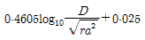
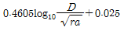
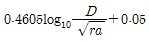
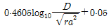
(정답률: 50%)
29. 전력용 콘덴서 회로에 방전코일을 설치하는 주된 목적은?
- 합성 역률의 개선
- 전압의 파형 개선
- 콘덴서의 등가 용량 증대
- 전원 개방시 잔류 전하를 방전시켜 인체의 위험 방지
(정답률: 74%)
30. 플리커 예방을 위한 수용가 측의 대책이 아닌 것은?
- 공급 전압을 승압한다.
- 전원 계통에 리액터분을 보상한다.
- 전압 강하를 보상한다.
- 부하의 무효전력 변동분을 흡수한다.
(정답률: 56%)
31. 수전 용량에 비해 첨두부하가 커지면 부하율은 그에 따라 어떻게 되는가?
- 높아진다.
- 낮아진다.
- 변하지 않고 일정하다.
- 부하의 종류에 따라 달라진다.
(정답률: 64%)
32. 고장점에서 구한 전 임피던스를 Z[Ω], 고장점의 상전압을 E[V]라 하면 3상 단락전류 [A]는?
- E/Z
- ZE/√3
- √3E/Z
- 3E/Z
(정답률: 65%)
33. 파동 임피던스가 Z1=400[Ω]인 선로의 종단에 파동 임피던스가 Z2=1200[Ω]인 변압기가 접속되어 있다. 지금 선로로부터 파고 e1=1000[kV]의 전압이 진입하였다. 접속점에서 전압의 투과파 [kV]는?
- 500
- 1000
- 1500
- 2000
(정답률: 52%)
34. 피뢰기의 정격전압이란?
- 상용주파수의 방전 개시전압
- 속류를 차단할 수 있는 최고의 교류 전압
- 방전을 개시할 때 단자전압의 순시값
- 충격방전전류를 통하고 있을 때 단자전압
(정답률: 54%)
35. 콘덴서형 계기용 변압기의 특징에 속하지 않은 것은?
- 권선형에 비해 오차가 적고 특성이 좋다.
- 절연의 신뢰도가 권선형에 비해 크다.
- 고압 회로용의 경우는 권선형에 비해 소형 경량이다.
- 전력선 반송용 결합 콘덴서와 공용할 수 있다.
(정답률: 53%)
36. 화력 발전소에서 증기 및 급수가 흐르는 순서는?
- 보일러 -> 과열기 -> 절탄기 -> 터빈 -> 복수기
- 보일러 -> 절탄기 -> 과얄기 -> 터빈 -> 복수기
- 절탄기 -> 보일러 -> 과열기 -> 터빈 -> 복수기
- 절탄기 -> 과열기 -> 보일러 -> 터빈 -> 복수기
(정답률: 69%)
37. 전력계통의 주파수가 기준값보다 증가하는 경우 어떻게 하는 것이 가장 타당한가?
- 발전 출력[kW]을 감소시켜야 한다.
- 발전 출력[kW]을 증가시켜야 한다.
- 무효 전력[kVar]을 감소시켜야 한다.
- 무효 전력[kVar]을 증가시켜야 한다.
(정답률: 60%)
38. 가공전선로에 대한 지중전선로의 장점으로 옳은 것은?
- 건설비가 싸다.
- 송전 용량이 많다.
- 인축에 대한 안전성이 높으며 환경 조화를 이룰 수 있다.
- 사고 복구에 효율적이다.
(정답률: 74%)
39. 1선 지락시 건전상의 전압상승이 가장 적은 중성점 접지 방식은?
- 직접 접지방식
- 비접지 방식
- 저항 접지방식
- 소호 리액터 접지 방식
(정답률: 62%)
40. 전력 원선도의 가로축과 세로축은 각각 어느 것을 나타내는가?
- 전압과 전류
- 전압과 역률
- 전류와 유효전력
- 유효전력과 무효전력
(정답률: 82%)
3과목: 전기기기
41. 순저항 부하를 갖는 3상 반파 위상제어 정류회로에서 출력 전류가 연속이 되는 점호각 a의 범위는?
- a ≤ 30°
- a ＞ 30°
- a ≤ 60°
- a ＞ 60°
(정답률: 60%)
42. 변압기의 임피던스 전압이란 정격부하를 걸었을 때 변압기 내부에서 일어나는 임피던스에 의한 전압 강하분이 정격 전압의 몇 [%]가 강하하는가의 백분율이다. 다음 어느 시험에서 구할 수 있는가?
- 무부하시험
- 단락시험
- 온도 시험
- 내전압 시험
(정답률: 69%)
43. 교류 단상직권전동기의 구조를 설명한 것 중 옳은 것은?
- 역률 개선을 위해 고정자와 회전자의 자로를 성층 철심으로 한다.
- 정류 개선을 위해 강계자 약전기자형으로 한다.
- 전기자 반작용을 줄이기 위해 약계자 강 전기자형으로 한다.
- 역률 및 정류 개선을 위해 약계자 강 전기자형으로 한다.
(정답률: 50%)
44. 터빈 발전기의 냉각을 수소 냉각방식으로 하는 이유가 아닌것은?
- 풍손이 공기 냉각시의 약 1/10으로 줄어든다.
- 동일기계일 때 공기냉각시 보다 정격 출력이 약 25% 증가한다.
- 수분, 먼지 등이 없어 모로나에 의한 손상이 없다.
- 비열은 공기의 약 10배이고 열전도율은 약 15배로 된다.
(정답률: 57%)
45. 직류기에서 양호한 정류를 얻는 조건을 옳게 설명한 것은?
- 정류 주기를 짧게 한다.
- 전기자 코일의 인덕턴스를 작게 한다.
- 평균 리액턴스 전압을 브러시 접촉 저항에 의한 전압 강하보다 크게 한다.
- 브러시 접촉저항을 작게 한다.
(정답률: 57%)
46. 동기 전동기의 기동법으로 옳은 것은?
- 직류 초퍼법, 기동 전동기법
- 자기동법, 기동 전동기법
- 자기동법, 직류 초퍼법
- 계자 제어법, 저항 제어법
(정답률: 51%)
47. 전부하에 있어 철손과 동손의 비율이 1:2인 변압기에서 효율이 최고인 부하는 전부하의 약 몇 [%]인가?
- 50
- 60
- 70
- 80
(정답률: 56%)
48. 용량 40[kVA], 3200/200[V]인 3상 변압기 2차측에 3상 단락이 생겼을 경우 단락 전류는 약 몇 [A]인가? (단, %임피던스 전압은 4[%]이다.)
- 1887
- 2887
- 3243
- 3558
(정답률: 56%)
49. △결선 변압기의 한 대가 고장으로 제거되어 V결선으로 공급할 때 공급할 수 있는 전력은 고장 전 전력에 대하여 몇[%]인가?
- 86.6
- 75.0
- 66.7
- 57.7
(정답률: 75%)
50. 절연유를 충만시킨 외함내에 변압기를 수용하고, 오일의 대류작용에 의하여 철심 및 권선에 발생한 열을 외함에 전달하며, 외함의 방산이나 대류에 의하여 열을 대기로 방산시키는 변압기의 냉각방식은?
- 유입 송유식
- 유입 수냉식
- 유입 풍냉식
- 유입 자냉식
(정답률: 60%)
51. 선박의 전기추진용 전동기의 속도제어에 가장 알맞은 것은?
- 주파수 변화에 의한 제어
- 극수 변화에 의한 제어
- 1차 회전에 의한 제어
- 2차 저항에 의한 제어
(정답률: 71%)
52. 단상 유도전동기의 기동 토크가 큰 순서로 되어 있는 것은?
- 반발기동, 분상기동, 콘덴서 기동
- 분상기동, 반발기동, 콘덴서 기동
- 반발기동, 콘덴서 기동, 분상기동
- 콘덴서 기동, 분상기동, 반발기동
(정답률: 73%)
53. 전류가 불연속인 경우 전원전압 220[V]인 단상 전파정류회로에서 점호각∝=90°일 때의 직류 평균전압은 약 몇 [V]인가?
- 45
- 84
- 90
- 99
(정답률: 66%)
54. 3상 권선형 유도 전동기에서 토크 t, 1차 전류 I1, 역률 cosθ, 2차 동손 P20, 효율 n, 출력 P0라 할 때 비례추이 하는 량으로 조합된 것은?
- I1,cosθ, P0
- t, P20,P0
- P20, n, P0
- t, I1, cosθ
(정답률: 60%)
55. 유도 전동기의 속도제어방식으로 적합하지 않은 것은?
- 2차 여자제어
- 2차 저항제어
- 1차 저항제어
- 1차 주파수 제어
(정답률: 61%)
56. 용량 1[kVA], 3000/200[V]의 단상 변압기를 단권 변압기로 결선하여 3000/3200[V]의 승압기로 사용할 때 그 부하용량[kVA]은?
- 16
- 15
- 1.5
- 0.6
(정답률: 45%)
57. 교류 전동기에서 브러시 이동으로 속도변화가 편리한 전동기는?
- 시라게 전동기
- 농형 전동기
- 동기 전동기
- 2중 농형 전동기
(정답률: 73%)
58. 동기기의 전기자 저항을r, 반작용 리액턴스를 xa, 누설 리액턴스를 xl이라 하면 동기 임피던스는?
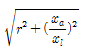
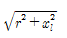
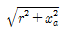
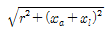
(정답률: 73%)
59. 다음에서 동기전동기와 거의 같은 구조는?
- 직류 전동기
- 유도 전동기
- 정류자 전동기
- 동기 발전기
(정답률: 69%)
60. 3상 유도전동기 기동특성에서 기동토크 tsts가 부하토크 tc보다 약간 클 때 가속토크로 작용하는 것은? (단, 전동기 토크는 t이다.)
- tc-t
- t-tc
- t-ts
- ts-t
(정답률: 59%)
4과목: 회로이론
61. R-L 직렬회로에
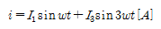
를 흘리는데 필요한 단자전압 e[V]는?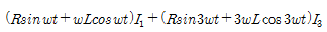
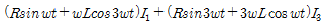
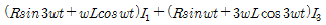
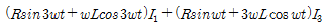
(정답률: 59%)
62. 3상 유도 전동기의 출력이 3.5[kW], 선간전압이 220[V], 효율 80%, 역률 85%일 때 전동기의 선전류[A]는?
- 약 9.2
- 약 10.3
- 약 11.4
- 약 13.5
(정답률: 57%)
63. 그림의 회로에서 단자 a-b에 나타나는 전압은 몇 [V]인가?
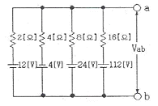
- 10
- 12
- 14
- 16
(정답률: 52%)
64. 전압 v=20sin20t+30sin30t[V]이고, 전류가 i=30sin20t+20sin30t[A] 이면 소비전력[W]은?
- 1200
- 600
- 400
- 300
(정답률: 66%)
65. 그림의 회로에서 스위치 S를 갑자기 닫은 후 회로에 흐르는 전류i(t)의 시정수는? (단, C에 초기 전하는 없었다.)
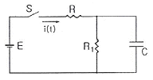
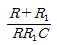
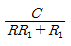
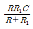
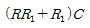
(정답률: 54%)
66. 출력이
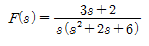
로 표시되는 제어계가 있다. 이 계의 시간함수 f(t)의 정상값은?- 3
- 2
- 1/3
- 1/6
(정답률: 71%)
67. 대칭 6상 전원이 있다. 환상결선으로 권선에 120[A]의 전류를 흘린다고 하면 선전류[A]는?
- 60
- 90
- 120
- 150
(정답률: 69%)
68. 2단자 임피던스 함수가
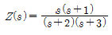
일 때 회로의 단락상태를 나타내는 점은?- -1,0
- 0,1
- -2,-3
- 2,3
(정답률: 49%)
69. 그림과 같은 주파수에 관계없이 일정한 임피던스를 갖도록 C[㎌]의 값을 구하면?
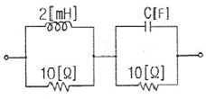
- 20
- 10
- 2.45
- 0.24
(정답률: 61%)
70. 다음은 과도현상에 관한 내용이다. 틀린것은?
- RL 직렬회로의 시정수는 L/R[s]이다.
- RC 직렬회로에서 V0로 충전된 콘덴서를 방전시킬 경우 t=RC에서의 콘덴서 단자전압은 0.632V0이다.
- 정현파 교류회로에서는 전원을 넣을 때의 위상을 조절함으로써 과도현상의 영향을 제거할 수 있다.
- 전원이 직류 기전력인 때에도 회로의 전류가 정현파로 되는 경우가 있다.
(정답률: 51%)
71.
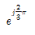
와 같은 것은?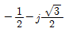
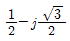
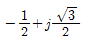
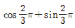
(정답률: 60%)
72. 그림과 같은 회로의 a-b간에 20[V]의 전압을 가할 때 5[A]의 전류가 흐른다. r1및 r2에 흐르는 전류의 비를 1:2로 하려면 r1 및 r2는 각각 몇 [Ω] 인가?
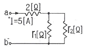
- r1=2, r2=4
- r1=4, r2=2
- r1=3, r2=6
- r1=6, r2=3
(정답률: 57%)
73. 대칭 3상 Y결선 부하에서 각상의 임피던스가 Z=16+j12[Ω]이고, 부하 전류가 5[A]일 때, 이 부하의 선간전압[V]은?
- 100√3
- 100√2
- 200√3
- 200√2
(정답률: 72%)
74. 어느 회로에 전압 V=6cos(4t+30°)[V]를 가했다. 이 전원의 주파수[hz]는?
- 2
- 4
- 2π
- 2/π
(정답률: 54%)
75. f(t)=sintcost를 라플라스 변환하면?
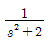
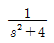
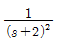
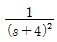
(정답률: 36%)
76. 기본파의 30[%]인 제 3고조파와 기본파의 20[%]인 제 5고조파를 포함하는 전압파의 왜형률은 약 얼마인가?
- 0.21
- 0.33
- 0.36
- 0.42
(정답률: 71%)
77. 로 표시되는 전류보다 위상이 60도 지연되고, 최대치가 200[V]인 전압 v를 식으로 나타낸것은?
(정답률: 49%)
78. 다음 회로해석의 설명 중에서 옳지 않은 것은?
- 전기회로는 특정 목적을 달성하기 위하여 상호 연결된 회로소자들의 집합이다.
- 옴의 법칙과 같은 소자법칙은 회로가 어떻게 구성되는지에 따라 각 개별 소자에서 단자 전압과 전류를 관계지어준다.
- 키르히호프의 법칙은 회로의 연결법칙으로서 전하 불변 및 에너지 불변으로부터 유래되었다.
- 일반적으로 전압-전류 특성에 의하여 회로의 형태를 알 수 있는 것이며, 특히 다이오드와 트랜지스터는 선형적으로 해석할 수 있다.
(정답률: 61%)
79. 4단자 정수를 구하는 식으로 틀린 것은?
(정답률: 61%)
80. 임피던스가 로 표시되는 2단자 회로는? (단, s=jw이다.)
(정답률: 58%)
5과목: 전기설비기술기준 및 판단 기준
81. 고압 가공전선로에 사용하는 가공지선으로 나경동선을 사용할 때의 최소굵기[㎜]는?
- 3.2
- 3.5
- 4.0
- 5.0
(정답률: 67%)
82. 사용전압 380[V]인 저압 보안공사에 사용되는 경동선은 그 지름이 최소 몇 [㎜] 이상의 것을 사용하여야 하는가?
- 2.0
- 2.6
- 4.0
- 5.0
(정답률: 36%)
83. 수상 전선로를 시설하는 경우에 대한 설명으로 알맞은 것은?
- 사용전압이 고압인 경우에는 클로로프렌 캡타이어 케이블을 사용한다.
- 가공전선로의 전선과 접속하는 경우, 접속점이 육상에 있는 경우에는 지표상 4m 이상의 높이로 지지물에 견고하게 붙인다.
- 가공전선로의 전선과 접속하는 경우, 접속점이 수면상에 있는 경우, 사용전압이 고압인 경우에는 수면상 5m 이상의 높이로 지지물에 견고하게 붙인다.
- 고압 수상전선로에 지락이 생길때를 대비하여 전로를 수동으로 차단하는 장치를 시설한다.
(정답률: 52%)
84. 고압 가공전선과 식물과의 이격거리에 대한 기준으로 가장 적절한 것은?
- 고압 가공전선의 주위에 보호망으로 이격시킨다.
- 식물과의 접촉에 대비하여 차폐선을 시설하도록 한다.
- 고압 가공전선을 절연전선으로 사용하고 주변의 식물을 제거시키도록 한다.
- 식물에 접촉하지 아니하도록 시설하여야 한다.
(정답률: 71%)
85. 동기 발전기를 사용하는 전력 계통에 시설하여야 하는 장치는?
- 비상 조속기
- 동기 검정 장치
- 분로 리액터
- 절연유 유출 방지 설비
(정답률: 65%)
86. 지선을 사용하여 그 강도를 분담시켜서는 아니되는 가공전선로 지지물은?
- 목주
- 철주
- 철근 콘크리트주
- 철탑
(정답률: 71%)
87. 154[kV]전선로를 제 1종 특고압 보안공사로 시설할 때 경동연선의 최소 굵기는 몇[mm2]이어야 하는가?
- 55
- 100
- 150
- 200
(정답률: 56%)
88. 과전류 차단기로 시설하는 퓨즈 중 고압전로에 사용하는 포장 퓨즈는 정격전류의 몇 배에 견디어야 하는가? (단, 퓨즈 이외의 과전류 차단기와 조합하여 하나의 과전류 차단기로 사용하는 것을 제외한다.)
- 1.1
- 1.3
- 1.5
- 1.7
(정답률: 58%)
89. 폭연성 분진 또는 화약류의 분말이 존재하는 곳의 저압 옥내배선은 어느 공사에 의하는가?
- 애자 사용 공사
- 캡타이어 케이블 공사
- 합성 수지관 공사
- 금속관 공사
(정답률: 74%)
90. 저압 가공전선이 안테나와 접근상태로 시설되는 경우 가공전선과 안테나 사이의 이격거리는 저압인 경우 몇 [㎝]이상 이어야 하는가?
- 40
- 60
- 80
- 100
(정답률: 65%)
91. 옥내에 시설하는 관등회로의 사용전압이 12000[V]인 방전등 공사시의 네온 변압기 외함에는 몇 종 접지 공사를 해야 하는가?(관련 규정 개정전 문제로 여기서는 기존 정답인 3번을 누르면 정답 처리됩니다. 자세한 내용은 해설을 참고하세요.)
- 제 1종
- 제 2종
- 제 3종
- 특별 제 3종
(정답률: 55%)
92. 발전소에 시설하지 않아도 되는 계측 장치는?
- 발전기의 전압 및 전류 또는 전력
- 발전기의 베어링 및 고정자의 온도
- 발전기의 회전수 및 주파수
- 특고압용 변압기의 온도
(정답률: 50%)
93. 저압 옥내배선의 사용전압이 400[V] 미만인 경우 버스 덕트 공사는 몇 종 접지공사를 하여야 하는가?(관련 규정 개정전 문제로 여기서는 기존 정답인 3번을 누르면 정답 처리됩니다. 자세한 내용은 해설을 참고하세요.)
- 제 1종
- 제 2종
- 제 3종
- 특별 제 3종
(정답률: 67%)
94. 전력보안 통신설비의 보안장치 중에서 특고압용 배류 중계 코일을 시설하는 경우 선로측 코일과 대지와의 사이의 절연내력은 몇 [V]의 시험전압으로 연속하여 1분간 견디어야 하는가?
- AC 600
- AC 6000
- AC 300
- AC 3000
(정답률: 52%)
95. 아크 용접장치의 시설 기준으로 옳지 않은 것은?
- 용접 변압기는 절연변압기일 것
- 용접 변압기의 1차측 전로의 대지전압은 400[V] 이하일것
- 용접 변압기 1차측 전로엔느 용접변압기에 가까운 곳에 쉽게 개페할 수 있는 개폐기를 시설할 것
- 피용접재 또는 이와 전기적으로 접속되는 받침대, 정반 등의 금속체에는 제 3종 접지공사를 할 것
(정답률: 68%)
96. 옥내의 저압전선으로 나전선 사용이 허용되지 않는 경우는?
- 라이팅 덕트 공사에 의하여 시설하는 경우
- 버스 덕트 공사에 의하여 시설하는 경우
- 애자 사용 공사에 의하여 전개된 곳에 시설하는 경우
- 금속관 공사에 의하여 시설하는 경우
(정답률: 58%)
97. 고압 또는 특고압 가공전선과 금속제 울타리, 담 등이 교차하는 경우에 금속제의 울타리, 담 등에는 교차점과 좌우로 45[m] 이내의 개소에 몇 종 접지공사를 하는가?(관련 규정 개정전 문제로 여기서는 기존 정답인 1번을 누르면 정답 처리됩니다. 자세한 내용은 해설을 참고하세요.)
- 제 1종 접지공사
- 제 2종 접지공사
- 제 3종 접지공사
- 특별 제 3종 접지공사
(정답률: 50%)
98. 사용전압이 161[kV]의 가공전선이 건조물과 제 1차 접근상태로 시설되는 경우 가공전선과 건조물 사이의 이격거리는 몇 [m] 이상인가?
- 4.25
- 4.65
- 4.95
- 5.45
(정답률: 41%)
99. 강색 철도의 전차선은 지름 몇 [mm]의 경동선 또는 이와 동등 이상의 세기 및 굵기의 것 이어야 하는가?
- 5
- 7
- 10
- 15
(정답률: 42%)
100. 농사용 저압 가공전선로 시설에 대한 설명으로 옳지 않은 것은?
- 목주의 말구 지름은 9[㎝] 이상일 것
- 지름 2[㎜] 이상의 경동선 일 것
- 지표상 3.5[m] 이상일 것
- 전선로의 경간은 50[m] 이하일 것
(정답률: 62%)